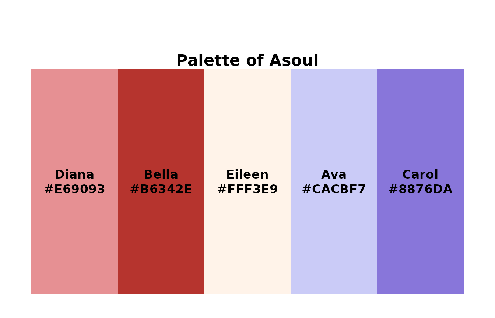
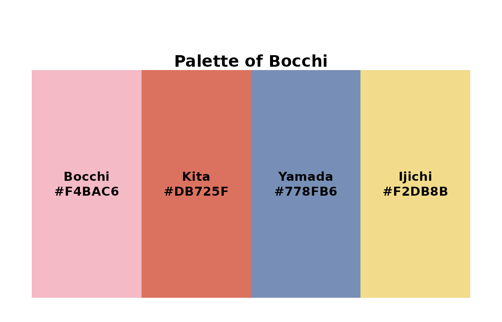
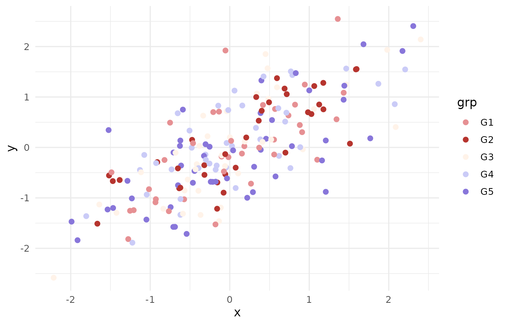
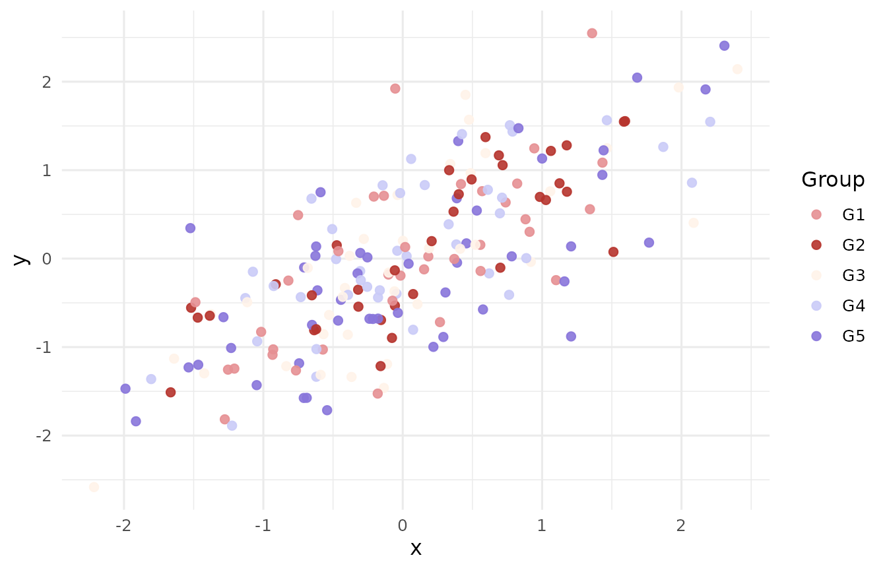
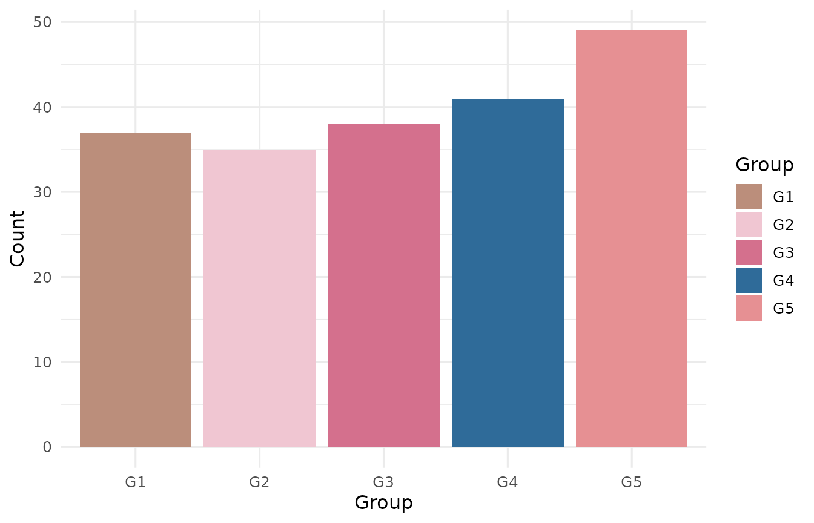

title: “gganime: ggsci-style discrete palettes for ggplot2” output: rmarkdown::html_vignette vignette: > % % % —
library(gganime)
gganime_palettes()
#> [1] "Asoul" "Diana" "Bella" "Eileen" "Ava" "Carol" "Mygo" "Mujica"
#> [9] "Bocchi"
show_anime("Asoul");show_anime("Bocchi")
library(ggplot2)
cols <- pal_anime("Asoul")(5)
cols
#> [1] "#E69093FF" "#B6342EFF" "#FFF3E9FF" "#CACBF7FF" "#8876DAFF"
set.seed(1)
df <- data.frame(
x = rnorm(200),
grp = factor(sample(paste0("G", 1:5), 200, replace = TRUE),
levels = paste0("G", 1:5))
)
df$y <- 0.7 * df$x + rnorm(200, sd = 0.6)
ggplot(df, aes(x, y, color = grp)) +
geom_point(size = 2) +
scale_color_manual(values = cols) +
theme_minimal(base_size = 12)
ggplot(df, aes(x, y, color = grp)) +
geom_point(size = 2, alpha = 0.9) +
scale_color_anime(palette = "Asoul") +
theme_minimal(base_size = 12) +
labs(color = "Group")
ggplot(df, aes(grp, fill = grp)) +
geom_bar() +
scale_fill_anime(palette = "Diana") +
theme_minimal(base_size = 12) +
labs(fill = "Group", x = "Group", y = "Count")